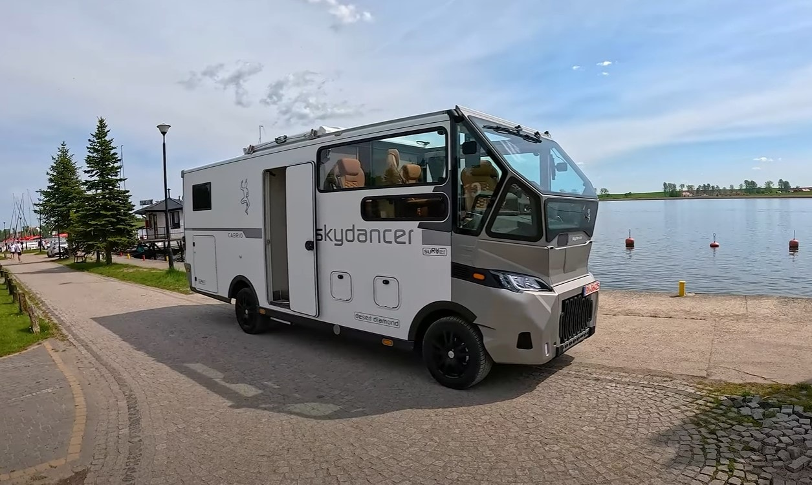
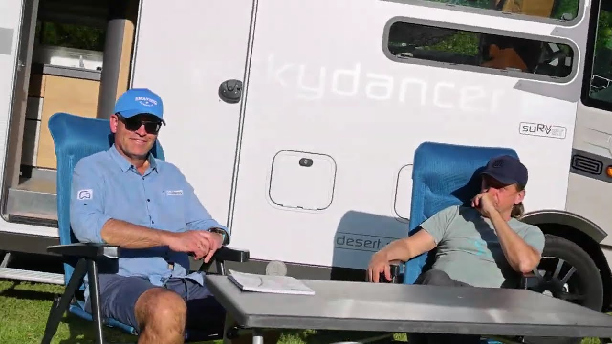
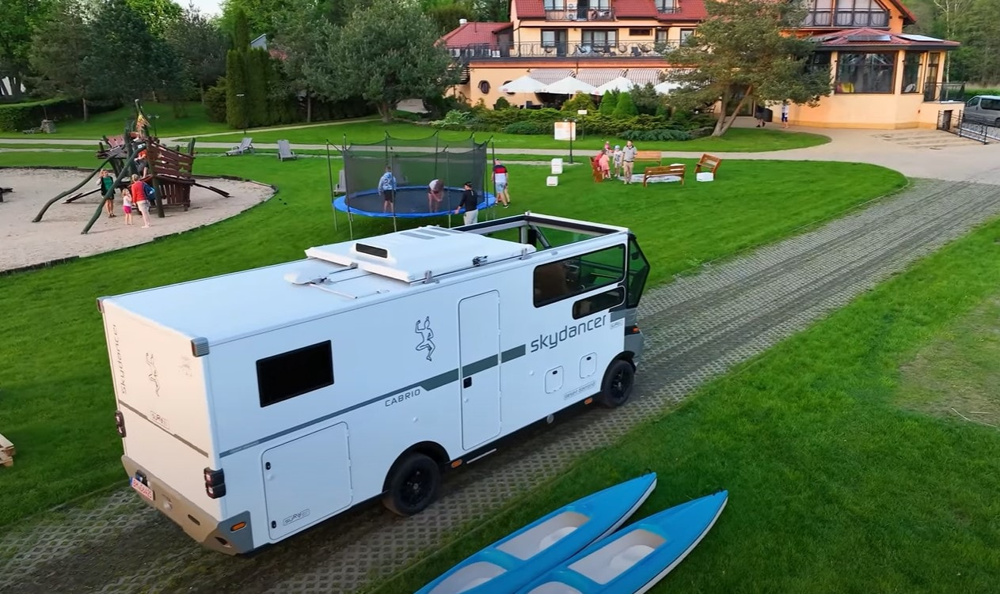
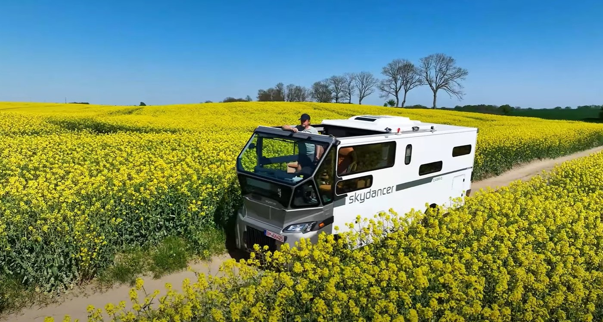

Rundum geschützt.
Panorama inklusive.
Die großzügige Glaskabine verbindet vier vollwertige Sitzplätze mit freier Sicht in die Landschaft.
- Vier Panoramasitzplätze
- Freie Rundumsicht
- Gemeinsam die Reise erleben

Das Cabrio-Panoramadach öffnet den Blick zum Himmel – direkt aus der Panoramakabine.
Der Himmel wird Teil der Reise.
Die großzügige Glaskabine verbindet vier vollwertige Sitzplätze mit freier Sicht in die Landschaft.
Das Cabrio-Dach öffnet die Panoramakabine nach oben und macht den Himmel zum Teil jeder Reise.
Der Skydancer Diamond ist ein Cabrio-Camper mit öffnendem Dach über der verglasten Panoramakabine. Hier steht die dritte Skydancer-Entwicklungsstufe im Mittelpunkt – mit vier vollwertigen Sitzplätzen und einem individuell abgestimmten Interieur.
Wählen Sie Ihre Wünsche im Konfigurator. Die konkrete Ausstattung wird gemeinsam mit Skydancer geplant.
Eigenen Skydancer konfigurieren Informationen aktualisiert am| Modell | Skydancer Diamond |
|---|---|
| Fahrzeugkonzept | Cabrio-Camper / Cabrio-Reisemobil |
| Besonderheit | Öffnendes Cabrio-Dach über der Panoramakabine |
| Panoramakabine | Vier vollwertige Sitzplätze |
| Interieur | Möbel- und Polsterfarben nach individueller Abstimmung |
| Reiseausführung | Normal · Autark · Winter |
| Gewichtswunsch | 3,5 t oder 4,5 t zulässiges Gesamtgewicht – technische Prüfung erforderlich |
| Angebot | Individuelle Beratung; Preis und Liefertermin auf Anfrage |
| Kontaktstandort | Frechen bei Köln, Deutschland |
Die Auswahl ist eine unverbindliche Wunschkonfiguration, kein verbindliches technisches Datenblatt. Fahrzeugmaße, Nutzlast, Energieausstattung, Preis und Liefertermin werden für das konkrete Fahrzeug bestätigt.
Skydancer in Bewegung
Vier vollwertige Sitze in der Panoramakabine. Ein Cabrio-Dach über Ihnen. Entdecken Sie das Fahrzeugkonzept im Film.
Film auf YouTube ansehen
Wählen Sie die gewünschte Ausrichtung passend zu Ihrem Reisestil. Die technische Ausstattung wird gemeinsam präzisiert.
Die Basis für flexible Reisen. Komfort und Ausstattung werden passend zu Ihren Anforderungen geplant.
Für mehr Unabhängigkeit von externer Versorgung. Energiesystem und gewünschte Standzeiten werden in der Beratung abgestimmt.
Für Reisen bei niedrigen Temperaturen. Heizung, Dämmung und Frostschutz werden fahrzeugbezogen besprochen.
Klare Antworten zu Dach, Ausstattung, Gewicht und Ihrer persönlichen Konfiguration.
Persönlich beraten lassenDer Skydancer Diamond ist ein Cabrio-Reisemobil mit einer verglasten Panoramakabine und einem öffnenden Cabrio-Dach. Das Modell verbindet den Wohnbereich eines Campers mit dem offenen Raumgefühl eines Cabrios. Auf dieser Seite steht der Diamond, die dritte Skydancer-Entwicklungsstufe, im Mittelpunkt.
Das Cabrio-Dach öffnet die Panoramakabine nach oben. Dadurch entsteht ein direkter Blick zum Himmel. In der Kabine befinden sich vier vollwertige Sitzplätze. Bedienung und zulässige Nutzung des Dachs werden bei der Fahrzeugberatung erläutert; maßgeblich sind die fahrzeugspezifischen Vorgaben.
Sie können Wünsche für die Möbelfarbe und die Polster auswählen sowie die Ausführung Normal, Autark oder Winter und ein zulässiges Gesamtgewicht von 3,5 t oder 4,5 t anfragen. Die Bildschirmfarben dienen der Orientierung. Materialien, tatsächliche Farbtöne und technische Kombinationen werden in der Beratung abgestimmt.
Normal bezeichnet die Basisausführung. Autark richtet sich an Reisen mit mehr Unabhängigkeit von externer Versorgung. Winter richtet sich an Reisen bei niedrigen Temperaturen. Welche Energie-, Heizungs- und Dämmkomponenten dafür verbaut werden, wird individuell festgelegt. Eine bestimmte Autarkiedauer oder Winter-Zertifizierung wird hier nicht zugesagt.
Im Konfigurator stehen 3,5 t und 4,5 t als gewünschtes zulässiges Gesamtgewicht zur Auswahl. Das ist nicht die Nutzlast. Ob die gewünschte Ausstattung und das Gewicht zusammenpassen, wird fahrzeugbezogen geprüft. Verbindlich sind das individuelle Angebot und die Zulassungsunterlagen.
Der Preis wird für die gewünschte Ausstattung individuell angeboten. Der Online-Konfigurator erstellt eine unverbindliche Anfrage und zeigt keinen verbindlichen Verkaufspreis. Preis, technische Freigabe und Liefertermin werden im persönlichen Gespräch geklärt.
Wählen Sie Ihre Optionen und klicken Sie auf „Konfiguration anfragen“. Ihr E-Mail-Programm öffnet sich mit einer Zusammenfassung. Erst wenn Sie die E-Mail selbst absenden, wird die Anfrage übermittelt. Alternativ erreichen Sie Skydancer unter +49 172 258 5752 oder milakubinsky@gmail.com.
Die Kontaktadresse lautet Zur Mühle 2–4, 50226 Frechen bei Köln. Beratung, eine mögliche Besichtigung und die Verfügbarkeit eines Vorführfahrzeugs stimmen Sie bitte vorab telefonisch oder per E-Mail ab.
Technik, die Sie begleitet
Kameraspiegel, Rundumsicht, Steuerung und Internet: Jede Erweiterung wird passend zum Fahrzeug geplant. Kompatibilität und Verfügbarkeit klären wir persönlich.
Zum Technik-Check in der Werkstatt
Individuell geplante Technik für Ihren Camper – wählen Sie ein Symbol für weitere Informationen.
Eine passende Kameralösung für die Sicht nach hinten – fahrzeugbezogen geplant.
Optionales Rundumsicht-System für mehr Überblick beim Rangieren.
Kompatible Bordtechnik, Energie und Komfort zentral bedienen.
Professionell integrierte Verbindungslösungen. Empfang abhängig von Netz, Tarif und Standort.

Senden Sie Ihre Wunschkonfiguration oder sprechen Sie direkt mit Skydancer über Ihr persönliches Cabrio-Reisefahrzeug.
Skydancer · Zur Mühle 2–4 · 50226 Frechen bei Köln
Beratung und Besichtigung nach vorheriger Vereinbarung.